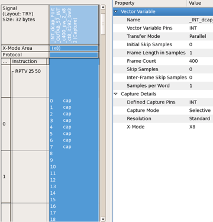
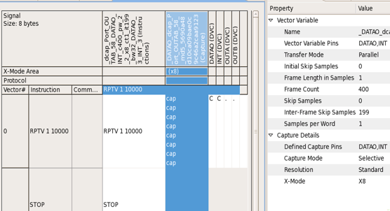
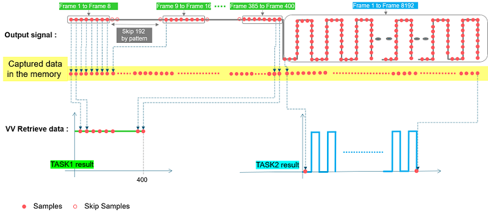
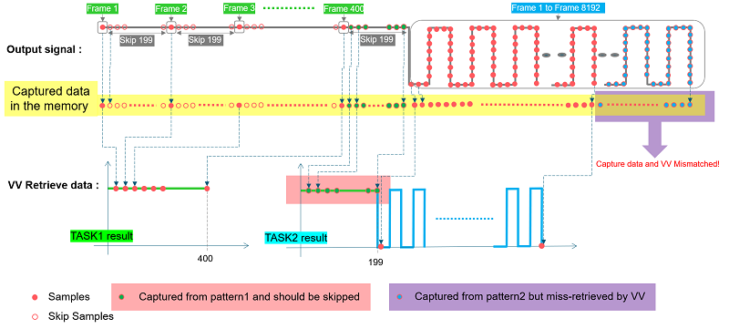

X-mode handling in digCap with SmartRDI
In x-mode digital capture, two setups will determine the data that you get.
-
Captured data = "C" in the pattern
-
Vector Variable = "VV" setup for the pattern
See How to set up Digital Capture and Using Digital Capture for more information about "C" actions and vector variables.
Pattern generated by SmartRDI
- (a) Captured data "C" only gets the "wanted" data and skips "unwanted" data by pattern. "VV" downloads all the data from memory.
- (b) Captured data "C" gets all the data. "VV" does the post-processing to skip "unwanted" data.
For examples,


X-mode handling
When dealing with x-mode = 1, SmartRDI always handles data with Way (a).
When dealing with x-mode > 1, SmartRDI handles data with either Way (a) or Way (b), which used will depend on the number specified by x-mode, initDiscard(), interSkip() or samples().
SmartRDI always uses Way (a) if the number specified by samples(), initDiscard() or interSkip() is a multiple of the x-mode number.
Taking x-mode = 8 as example, the following two cases represent Way (a) and (b) in sample code.
// Task 1
rdi.port("Port_OUTAB").digCap("vv_Lock_Port_woBCK_OUT")
.pin("DATAO,INT")
.capMode(TA::PAR)
.initDiscard(0)
.interSkip(8,192)
.samples(400)
.execute();
// Task 2
rdi.port("Port_OUTAB").digCap("vv_FRO8_Trim_Check")
.pin("DATAO,INT")
.capMode(TA::PAR)
.initDiscard(0)
.samples(8192)
.execute();
For Task 1, the summary of digital capture pattern settings:
- Captured data "C": 400 samples (8 x 50)
- Initial Skip Samples: 0
- Frame Length in Samples: 1
- Frame Count: 400
- Inter-Frame Skip Samples: 0
- Skipped samples after 8 samples captured: 192 samples (8 x 24)
For Task 2, the summary of digital capture pattern settings:
- Captured data "C": 8192
- Initial Skip Samples: 0
- Frame Length in Samples: 1
- Frame Count: 8192
- Inter-Frame Skip Samples: 0

Case 2: Way (b) is used for Task 1 to generate pattern.
// Task 1
rdi.port("Port_OUTAB").digCap("vv_Lock_Port_woBCK_OUT")
.pin("DATAO,INT")
.capMode(TA::PAR)
.initDiscard(0)
.interSkip(1,199)
.samples(400)
.execute();
// Task 2
rdi.port("Port_OUTAB").digCap("vv_FRO8_Trim_Check")
.pin("DATAO,INT")
.capMode(TA::PAR)
.initDiscard(0)
.samples(8192)
.execute();
-
Captured data "C": 80000
-
Initial Skip Samples: 0
-
Frame Length in Samples: 1
-
Frame Count: 400
-
Inter-Frame Skip Samples: 199
For Task 2:
The summary of digital capture pattern settings:-
Captured data "C": 8192
-
Initial Skip Samples: 0
-
Frame Length in Samples: 1
-
Frame Count: 8192
-
Inter-Frame Skip Samples: 0

Important points in digCap x-mode handling with SmartRDI
- SmartRDI always uses Way (a) when the number specified in initDiscard(), interSkip() or samples() is a multiple of the x-mode number.
-
If you use Way (b), you must confirm that the data you get from the DUT/signal perspective is matched. You will see a warning message only when the mismatched size data is greater than 8 bytes.
-
SmarTest checks the recorded data after executing the whole burst and then compares it against the sum of all bits in each vector variable for each pin.
-
If you get the wrong data due to misalign digital capture data and vector variable, one of the following three actions can be used to shift the data:
- To insert a dummy label that does not have any "C" waveform, but a vector variable with extra bits. The dummy label will be called in the burst right after the corresponding capture pattern with the capture size mismatch.
- Not define any inter-frame discard and do all the post processing in the test method code.
- Add some extra bits as an initial discard in the next capture pattern. In this way you will still see a warning message but the result will be correct.
With Way (a), you can get a better test efficiency and do not need to handle the data alignment.